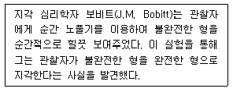
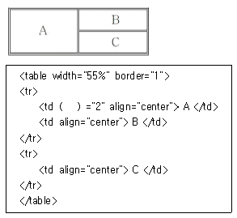
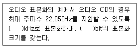

멀티미디어콘텐츠제작전문가(구) (2006-08-06 기출문제)
1과목: 멀티미디어개론
1. “OSI모델의 각 계층 중 물리계층은 ( )단위의 정보를 노드사이의 물리적 매체를 통하여 전자기적 신호나 광신호로 전달하는 역할을 한다.” ( )안에 들어갈 적당한 단어는?
- 비트
- 프로그램
- 프레임
- 패킷
(정답률: 알수없음)

2. 인터넷에서 사용되는 통신 프로토콜의 영어 원문 표기로 옳지 않은 것은?
- TCP : Transmission Control Protocol／Internet Protocol
- IP : Information Protocol
- HTTP : Hypertext Transfer Protocol
- SMTP : Simple Mail Transfer Protocol
(정답률: 알수없음)
3. 인터넷을 통해 데이터를 전송할 때 패킷을 단위로 나누어 전송하고 오류 제어 및 흐름 제어를 제공하는 프로토콜은?
- POP
- TCP
- IP
- SMTP
(정답률: 알수없음)
4. 다음 프로토콜들 중 그 성격이 다른 하나는?
- BGP(Border Gateway Protocol)
- OSPE(Open Shortest Path First)
- RIP(Routing Information Protocol)
- DHCP(Dynamic Host Configuration Protocol)
(정답률: 알수없음)
5. 통신제어장치의 역할은?
- 데이터 전송의 특성을 변조시킨다.
- 통신회선을 통하여 송·수신되는 과정을 제어하고 감시한다.
- 수신신호에서 아이 패턴을 복조한다.
- 통신회선을 거쳐 온 전송신호를 데이터로 변환시킨다.
(정답률: 알수없음)
6. IP 주소 체계에 대한 설명 중 가장 거리가 먼 것은?
- IP 주소는 IPv4와 IPv6로 나눌 수 있다.
- IPv6는 IP주소를 IPv4의 32비트 길이에서 128비트로 확장 하였다.
- IPv4 주소는 최소 0.0.0.0부터 최대 256.256.256.256까지이다.
- IPv6 주소는 8개의 16진수 4자리 숫자를 콜론(:)으로 구분하여 표기한다.
(정답률: 알수없음)
7. IP 주소 191.1.2.3은 어느 클래스에 속하는가?
- 클래스 A
- 클래스 B
- 클래스 C
- 클래스 D
(정답률: 알수없음)
8. 정보 검색을 위한 내용 표현을 목표로 하는 표준은?
- MPEG-1
- MPEG-2
- MPEG-3
- MPEG-4
(정답률: 알수없음)
9. PC통신에서 이미지 파일 전송시간을 줄이기 위해 Compuserve 사에서 개발한 압축방식이며, LZW(Lempel-Ziv-Weich)알고리즘을 사용하는 이미지 파일 포맷은?
- GIF(Graphics interchange Format)
- JPEG(Joint Photographic Experts Group)
- MPEG(Moving Picture Experts Group)
- Bitmap
(정답률: 알수없음)
10. 정보통신 및 멀티미디어 분야의 가장 중요한 표준화 기구로서 공동으로 JTC1을 운영하는 표준화 기구가 맞게 짝지어진 것은?
- ISO, IEC
- ISO, ITU
- OSI, IEC
- OSI, ITU
(정답률: 알수없음)
11. 다음 중 인터넷으로 전송되는 데이터를 식별하고 데이터의 종류를 구분하기 위해 정의한 표준화된 파일명 확장리스트로서 다양한 파일의 확장명과 타입, 용도에 대한 정의를 포함하는 것은?
- Plug-In
- MIME
- Cookie
- URL
(정답률: 알수없음)
12. 다음 데이터 통신에 관한 설명 중 거리가 가장 먼 것은?
- 단방향(simplex) 통신은 공중파 방송과 같이 송신측과 수신측이 정해져 있다.
- 전화기는 전이중(full duplex) 통신의 대표적인 예이다.
- 반이중(half duplex) 통신은 한쪽 방향으로만 송신이 가능하다.
- 전이중(full duplex) 통신은 무전기와 같이 사용 획득권을 이용하는 방식이다.
(정답률: 알수없음)
13. 데이터 통신에서 ATM의 약어로 옳은 것은?
- Automatic Teller Machine
- Automatic Transmission Model
- Asynchronous Telecommunication Method
- Asynchronous Transfer Mode
(정답률: 알수없음)
14. 고화질 디지털 방송을 위해 ISO 산하 MPEG 위원회에서 규정한 국제표준은?
- MPEG-1
- MPEG-2
- MPEG-3
- MPEG-4
(정답률: 알수없음)
15. 멀티미디어 정보의 통신환경과 관련이 먼 것은?
- 정보 제공자가 일방적으로 정보를 공급하는 형태가 되어야 한다.
- 대용량의 데이터를 빠른 속도로 전송하기 위해서는 초고속 통신기술이 요구된다.
- 미디어간의 시간적, 공간적 동기화 관계를 유지할 수 있는 통신기술이 요구된다.
- 동시에 여러 사용자 또는 시스템간의 정보 전달이 가능한 다자간 통신기능이 필요하다.
(정답률: 알수없음)
16. 다음 URL의 구성 요소 중 거리가 가장 먼 것은?
- 프로토콜과 포트 번호
- 인터넷 사용자 이름과 암호
- CGI 프로그램을 위한 질의 문자열
- 서버에서 객체를 지정하는 경로와 파일 이름
(정답률: 알수없음)
17. 하이퍼미디어에 대한 설명 중 거리가 가장 먼 것은?
- 연관된 여러 미디어 데이터를 연결한 정보탐색 구조이다.
- 하이퍼미디어 정보는 노드와 링크로 구성되어 있다.
- 링크는 정보 내용을 의미하며 노드는 링크들을 연결한다.
- 링크는 참조 링크, 조직 링크, 키워드 링크로 분류될 수 있다.
(정답률: 알수없음)
18. 육면체, 원뿔, 구 등의 기본적인 입체 도형들을 정의하고 있고, 3차원 세계를 모델링하고 상호작용을 지원하여 가상현실의 구현을 가능케 해주는 언어는?
- HTML(Hypertext Markup Language)
- XML(eXtensible Markup Language)
- SGML(Standard Generalized Markup Language)
- VRML(Virtual Reality Modeling Language)
(정답률: 알수없음)
19. 종이로된 인쇄물을 컴퓨터로 입력하는 장치인 스캐너의 해상도 단위로 가장 적당한 것은?
- dpi(Dots per Inch)
- lpi(Line per Inch)
- bit(Binary DIgit)
- bps(Bit per Second)
(정답률: 알수없음)
20. 다음 중 디지털 카메라, 스캐너와 같은 입력장치로 컬러 정지이미지를 컴퓨터로 저장 할 때, 가장 적합한 저장 파일 포맷은?
- BMP(Bit MaP)
- ASF(Active Streaming Format)
- IP(Internet Protocol)
- JPEG(Joint Photographic Experts Group)
(정답률: 알수없음)
21. 다음 이미지 파일 포맷에 대한 설명 중 거리가 가장 먼 것은?
- BMP는 압축방법을 사용하지 않기 때문에 파일 용량이 크다.
- GIF는 8비트 컬러를 지원한다.
- PNG는 인터레이싱은 지원하지만 투명 컬러는 지원하지 않는다.
- WMF는 윈도우에서 기본으로 사용하는 메타파일 포맷이다.
(정답률: 알수없음)
22. 다음 중 무손실 압축 기법에 해당되지 않는 것은?
- RLE
- DM
- 허프만 코딩
- 픽셀패킹
(정답률: 알수없음)
23. 다음 중 입력장치로 거리가 가장 먼 것은?
- 마우스
- 터치스크린
- 키보드
- 프린터
(정답률: 알수없음)
24. DVD-ROM의 데이터 전송속도는 CD-ROM과 마찬가지로 배속으로 나타내는데, DVD-ROM의 1배속이란?
- 1150Kbps
- 1250Kbps
- 1350Kbps
- 1450Kbps
(정답률: 알수없음)
25. DVD의 약어로 옳은 것은?
- Dynamically-Variable Disc
- Distribute Video Disc
- Double Volume Disc
- Digital Versatile Disc
(정답률: 알수없음)
2과목: 멀티미디어기획및디자인
26. “디자인의 핵심적 요소로서 시각적 구성요소들을 조합하여 상호간 기능적으로 배치, 배열하는 작업으로 포맷, 라인업, 마진 문자가 이에 속한다.”에 해당하는 편집디자인의 구성요소는?
- 타이포그래피
- 레이아웃
- 일러스트레이션
- 인쇄기법
(정답률: 알수없음)
27. 다음 중 타이포그래피에 대한 설명으로 거리가 가장 먼 것은?
- 메시지를 전달하는데 있어 매우 중요한 요소이다.
- 회화, 사진, 도표, 도형 등을 시각화한 것을 말하며 문장이나 여백을 보조하는 단순한 장식적 요소이다.
- 글자를 가지고 하는 디자인으로 예술과 기술이 합해진 영역이다.
- 글자의 크기, 글줄 길이, 글줄 사이, 글자 사이, 낱말사이, 조판 형식, 글자체 등이 조화를 이루었을 때 가장 이상적이다.
(정답률: 알수없음)
28. 다음 중 디자인 성격이 다른 하나는?
- 인테리어디자인(interior design)
- 애드버타이징디자인(advertising design)
- 커머셜디자인(commercial design)
- 그래픽디자인(graphic design)
(정답률: 알수없음)
29. 웹디자인에 대한 설명 중 거리가 가장 먼 것은?
- 아이콘 디자인은 웹디자인과는 관련이 없다.
- 인터넷이 대중화되면서 나타난 디자인 활동이다.
- 디자인과 색상에 대한 이해가 뒷받침되어야 한다.
- 디자인의 종합적 활용과 기술적인 요소 등도 알아야 한다.
(정답률: 알수없음)
30. “입체디자인의 기본 형태를 이루는 ( ), 공간내의 상호관계를 이루는 ( ), 대상물의 실체를 형성하는 ( )로 구성되어 있다.“ ( )안에 들어갈 내용을 순서대로 바르게 나열한 것은?
- 개념요소-상관요소-구조요소
- 실제요소-시각요소-개념요소
- 상관요소-구조요소-개념요소
- 상관요소-개념요소-구조요소
(정답률: 알수없음)
31. 웹 페이지 레이아웃을 디자인하기 위한 요소 중 그리드에 대한 설명으로 거리가 가장 먼 것은?
- 문장과 그래픽을 조직적으로 배치함으로써 일관성 있고 논리적인 화면 레이아웃을 제공한다.
- 반복에 의한 학습효과로 예측성을 획득 할 수 있다.
- 한 화면에서 구성요소들의 정확한 위치를 잡는데 도움을 준다.
- 여러 화면상에서 구성요소들의 위치가 일관되도록 도와준다.
(정답률: 알수없음)
32. 인터페이스 디자인을 위한 조형 원리 중 일관된 그래픽 스타일, 일정한 규칙에 의한 문자의 서체와 크기, 계획된 색채 사용 등에 적용되는 디자인 원리는?
- 통일감과 조화
- 강조
- 절제
- 균형
(정답률: 알수없음)
33. 인터페이스 디자인 중 아이콘이나 사인(sign) 디자인에 대한 설명 중 거리가 가장 먼 것은?
- 아이콘의 형태는 가능하면 단순, 명료하게 함으로써 시각적으로 쉽게 인식할 수 있어야 한다.
- 실생활에서의 관례나 행동야식, 형태 등을 비유적으로 이용한 아이콘은 사용자들의 반응을 쉽게 유도할 수 있다.
- 비슷한 역할을 하는 기능들은 가능한 한 그룹으로 묶는것이 사용자를 편안하게 한다.
- 사인의 경우 비표준형을 사용하며 개성 있고, 특색 있는 인터페이스가 되도록 한다.
(정답률: 알수없음)
34. 다음 중 산업디자인의 기본조건으로 거리가 가장 먼 것은?
- 가독성
- 경제성
- 독창성
- 기능성
(정답률: 알수없음)
35. 다음 중 평면 디자인의 원리에서 가시적인 시각 요소와 거리가 가장 먼 것은?
- 중량
- 형태
- 색채
- 질감
(정답률: 알수없음)
36. 다음 중 좋은 홈페이지가 갖추어야 할 조건으로 거리가 가장 먼 것은?
- 다양한 사용자들의 환경을 고려하지만 방문자의 의견은 중요하지 않다.
- 홈페이지의 메뉴를 어디에서든 볼 수 있어야 한다.
- 링크를 쉽게 찾을 수 있어야 한다.
- 파일의 크기는 되도록 최적화하여 만든다.
(정답률: 알수없음)
37. 홈페이지를 구성하는 요소 중 바람직하지 않은 것은?
- 일관성 있는 레이아웃
- 네비게이션의 최적화
- 최적화된 이미지
- 높은 해상도의 이미지
(정답률: 알수없음)
38. 레터링에 대한 설명으로 거리가 가장 먼 것은?
- 글자를 쓴다는 의미이다.
- 가독성이 부족하더라도 조형성이 중요하다.
- 글자를 새기거나 박음질하는 것도 포함된다.
- 이미 만들어진 글자체를 정확하게 옮기는 기술도 포함된다.
(정답률: 알수없음)
39. 때때로 사물을 사실과 다르게 지각하는 것을 무엇이라고 하는가?
- 착시
- 점이
- 변화
- 균형
(정답률: 알수없음)
40. 컴퓨터 그래픽의 표현방식 중 벡터(Vector)이미지에 관한 설명으로 옳은 것은?
- 기하학적인 객체들을 표현하는 그래픽 함수들로 이미지를 표현한다.
- 대표적인 벡터(Vector) 기반 포맷으로 GIF와 JPEG가 있다.
- 그림을 픽셀형태로 저장한다.
- 래스트 이미지(Raster Image)라고도 불린다.
(정답률: 알수없음)
41. “조직된 내용이 어떻게 동작하게 할 것인가를 규정한다.”에 해당하는 것은?
- 인터렉션 디자인
- 컬러 디자인
- 그래픽 디자인
- 타이포그래피 디자인
(정답률: 알수없음)
42. 다음 중 인터렉션 디자인의 중요 요소와 거리가 가장 먼 것은?
- 네비게이션
- 정보 접근의 유형
- 화려함
- 상호작용을 휘한 사용성 제고
(정답률: 알수없음)
43. 투시도의 구성요소가 아닌 것은?
- 지선(horizon line)
- 소점(vanishing point)
- 정점(station point)
- 투시도(perspective point)
(정답률: 알수없음)
44. 다음 중 밝기가 다른 두색을 인접시켰을 때 서로의 영향으로 밝은 색은 더욱 밝아 보이고 어두운 색은 더욱 어두워 보이는 현상을 무엇이라고 하는가?
- 색상대비
- 보색대비
- 명도대비
- 한난대비
(정답률: 알수없음)
45. 선의 특징에 대한 설명으로 거리가 가장 먼 것은?
- 직선 - 정적, 경직
- 고선 - 단순, 명료
- 수평선 - 평화, 안정감, 정지
- 수직선 - 상승감, 긴장감, 고결
(정답률: 알수없음)
46. 다음 중 가법혼색의 3원색이 아닌 것은?
- Yellow
- Red
- Green
- Blue
(정답률: 알수없음)
47. 픽셀과 뚜렷한 경계선의 거친 부분을 부드럽게 하는 기법은?
- Dithering
- Anti-Aliasing
- Surface Modeling
- Smooth Shading
(정답률: 알수없음)
48. 다음 중 다른 성격의 파일 포맷은?
- JPEG
- PNG
- GIF
- SWF
(정답률: 알수없음)
49. 은유의 의미를 내포하는 단어로 사용자가 접근하려는 인터페이스 환경을 쉽게 이해하도록 익숙한 개념적 모델을 제공하기 위해 이용되는 것을 무엇이라고 하는가?
- 그리드
- 가이드
- 레이아웃
- 메타포
(정답률: 알수없음)
50. 다음 중 기본적인 마케팅의 기능이 아닌 것은?
- 촉진기능
- 교환기능
- 물류기능
- 동일기능
(정답률: 알수없음)
3과목: 멀티미디어저작
51. 멀티미디어 콘텐츠가 갖는 특징 중 해당되지 않은 것은?
- 쌍방향으로 제공
- 시공간의 제약이 비교적 없음
- 전통적인 미디어로 제공된 콘텐츠
- 총체적인 미디어를 활용하여 재창출시킨 콘텐츠
(정답률: 알수없음)
52. 컴퓨터의 그래픽, 사운드, 애니메이션 등과 같은 기능을 이용하여 실제 조건과 유사한 경험을 통해 학습 내용을 이해하고 문제를 해결하도록 하는 멀티미디어 개발 모형은?
- 시뮬레이션형
- 개인교수형
- 대화형
- 교수게임형
(정답률: 알수없음)
53. 컴퓨터에 의해서 만들어진 사람형상을 한 모델의 한 종류로 가상환경 내의 참여자를 의미하며, 가상환경에서 사용자를 대신해서 활동하는 개체로 ‘분신’을 의미하는 것은?
- 아바타
- 사이버스페이스
- 채팅
- 오브젝트
(정답률: 알수없음)
54. 오디오, 비디오 등 아날로그 신호를 펄스 부호 변조(PCM)를 사용하여 전송에 적합한 디지털 비트 스트림으로 압축 변환하고, 역으로 수신측에서 디지털 신호를 아날로그 신호로 변환하는 것을 무엇이라고 하는가?
- Modulation
- CODEC
- Mopping
- UPS
(정답률: 알수없음)
55. 다음은 사람의 시지각에 관한 내용이다. 이 내용과 가장 관련이 깊은 것을 보기에서 고르시오.

- 폐쇄성
- 연속성
- 근접성
- 유사성
(정답률: 알수없음)
56. 드림위버에서 플래시 무비(swf)파일을 불러들일 때 무비의 배경색을 제거하려고 한다. 이때 사용되는 매개변수를 바르게 설정한 것은?
- ＜param name="wmode" value="true"
- ＜param name="bmode" value="true"
- ＜param name="wmode" value="transparent"
- ＜param name="bmode" value="transparent"
(정답률: 알수없음)
57. 멀티미디어 저작 프로그램 중 디렉터에서 사용되는 스크립트 언어로 옳은 것은?
- 링고 스크립트
- 자바 스크립트
- 액션 스크립트
- 비주얼베이직 스크립트
(정답률: 알수없음)
58. 디렉터 무비를 쇽웨이브(shockwave) 무비로 변환하면 생성되는 확장자는?
- php
- dcr
- exe
- htm
(정답률: 알수없음)
59. 동영상 파일의 종류가 아닌 것은?
- TTF
- RM
- MOV
- AVI
(정답률: 알수없음)
60. 다음 중 웹 문서의 확장자가 아닌 것은?
- asp
- php
- jsa
- html
(정답률: 알수없음)
61. 미디어 데이터를 시간축에 따라 배치하는 멀티미디어 저작도구 방식은 무엇인가?
- 타임라인(Timeline) 방식
- 페이지(Page) 방식
- 문서(Paper) 방식
- 아이콘(Icon) 방식
(정답률: 알수없음)
62. CSS(Cascading Style Sheet)의 특징으로 옳지 않은 것은?
- 관리하기가 용이하다.
- 기존의 HTML 기능을 확장해서 사용할 수 있다.
- 한 번의 지정으로 한 페이지에서만 횟수에 상관없이 여러 번 적용할 수 있다.
- 브라우저 마다 조금씩 다르게 적용되기도 한다.
(정답률: 알수없음)
63. CSS의 태그 중 font-weight의 역할은 무엇인가?
- 글꼴 굵기
- 글꼴 크기
- 자간 조절
- 라인을 이용한 장식
(정답률: 알수없음)
64. HTML문서에서 이미지 파일의 삽입을 위해 사용하는 태그(Tag)인 <IMG>에서 검색될 이미지의 주소(URL)를 정의할수 있는 옵션은?
- BORDER
- ALGIN
- SRC
- ALT
(정답률: 알수없음)
65. 아래와 같은 테이블을 만들기 위하여, ( )안에 들어갈 태그로 옳은 것은?

- cellpadding
- cell
- rowspan
- colspan
(정답률: 알수없음)
66. DHTML에 대한 설명으로 거리가 가장 먼 것은?
- 기존 HTML에 'Dynamic'이라는 수식어가 붙은 언어이다.
- 웹 문서에 애니메이션 뿐만 아니라 특수효과를 더해 동적인 웹 문서를 만든다.
- 기존 HTML에 CSS와 DOM, Script 등이 더해진 문서이다.
- DHTML을 통하여 텍스트와 테이블, 폼요소 등의 형태를 고급으로 지정해줄 수 있지만, 레이어는 별도의 태그를 가지고 있어 DHTML에 적용되지 않는다.
(정답률: 알수없음)
67. XML 언어에 대한 다음 사항 중 옳은 것은?
- XML문서는 웹브라우저에 나타낼 수 없다.
- XML에서는 태그를 정의해서 사용할 수 있다.
- XML에서는 태그를 정의해서 사용할 수 없다.
- XML태그는 조건부로 나타낼 텍스트에 사용하고 HTML태 그는 항상 표시되는 텍스트에 사용한다.
(정답률: 알수없음)
68. 1987년에 소개된 상용 저작 도구 HyperCard에서 사용되는 스크립트 언어는 무엇인가?
- HyperTalk
- Open Script
- Lingo
- Visual Script
(정답률: 알수없음)
69. 애플릿은 어떤 언어로 쓰여진 작은 응용 프로그램인가?
- Fortran
- Cobol
- 쉘스크립트
- 자바
(정답률: 알수없음)
70. 다음 중 플래시에 대한 설명으로 옳지 않은 것은?
- 플래시는 Vector 기반의 애니메이션 툴이다.
- 그래픽심벌은 별도의 타임라인을 갖고 있어 복잡한 애니메이션을 도와준다.
- Shape Tweening을 이용하여 형태가 변하는 애니메이션을 만들 수 있다.
- 플래시는 타임라인을 갖고 있어 시간에 따른 프레임의 이동으로 애니메이션 된다.
(정답률: 알수없음)
71. 플래시에서 모션트위닝으로 표현할 수 있는 기능이 아닌 것은?
- 크기변화
- 색상변화
- 몰핑효과
- 회전
(정답률: 알수없음)
72. 다음 중 플래시 액션스크립트의 변수명에 대한 규칙으로 옳은 것은?
- 숫자로 시작할 수 있다.
- /를 제외한 모든 특수문자를 사용할 수 있다.
- comment는 기본적으로 분홍색으로 표시되며, //를 기호로 사용한다.
- Date나 stop같은 변수명을 사용할 수 있다.
(정답률: 알수없음)
73. 자바스크립트의 논리 연산자 중 배타적 논리합(XOR)의 의미를 갖는 연산자는?
- &&
- ||
- ^
- |
(정답률: 알수없음)
74. 다음 중 자바스크립트에 대한 설명으로 옳은 것은?
- window.focus() : 창에 초점을 부여한다.
- /*window.open*/() : 열러있는 창에 문자를 입력한다.
- Iocation.reload() : 이전 페이지로 돌아간다.
- window.status : 브라우저 크기를 설정한 크기대로 유지 한다.
(정답률: 알수없음)
75. 자바 스크립트(Java Script)으 내장형 함수로서 메시지를 사용자에게 알려서 [확인]이나 [취소]를 선택하여 적절하게 조치할 수 있게 해주는 대화상자를 보여주는 함수는?
- parseFloat()
- alert()
- confirm()
- eval()
(정답률: 알수없음)
4과목: 멀티미디어제작기술
76. 주파수에 대한 설명 중 거리가 가장 먼 것은?
- 소리의 높낮이를 결정한다.
- 주기와 비례 관계에 있다.
- 초당 사운드 파형의 반복횟수를 의미한다.
- 사람의 가청 주파수대는 약 20Hz~20kHz 정도이다.
(정답률: 알수없음)
77. 사운드의 기본 요소가 아닌 것은?
- 위상
- 진폭
- 음색
- 주파수
(정답률: 알수없음)
78. 아날로그 파형을 디지털 형태로 변환하는 과정에서 발생하는 화이트 노이즈를 인위적으로 첨가하여 양자화 잡음과 음의 왜곡을 줄이는 방법은?
- 디더링
- 클리핑
- 앤티앨리어싱
- 절환오차
(정답률: 알수없음)
79. 다음 중 MPEG-2의 압축방법으로 거리가 가장 먼 것은?
- 허프만 코딩(Huffman Coding)
- RLE(Run Length Coding)
- DCT
- H.261
(정답률: 알수없음)
80. 미디(midi)에 관한 설명한 것 중 거리가 가장 먼 것은?
- 미디파일은 WAV파일에 비하여 매우 작다.
- 미디는 음악의 빠르기를 쉽게 변환할 수 있다.
- 미디는 조옮김을 쉽게 할 수 있다.
- 미디는 어떤 음원에서도 동일한 음질로 들을 수 있다.
(정답률: 알수없음)
81. MP3에 대한 설명으로 바른 것은?
- 실시간으로 영상을 보내기 위해 만든 압축 방식이다.
- 통합 멀티미디어 파일로서 파일 안에 오디오, 비디오, 이미지가지 들어갈 수 있다.
- 디지털 음악 악기의 표준 규격이다.
- MPEG-1의 오디오 부분에 해당하는 Layer-3를 말한다.
(정답률: 알수없음)
82. 다음 MPEG의 압축기술에서 사용하는 화면 중 프레임간의 쌍방향 예측부호화 영상은 어느 것인가?
- I 픽처
- P 픽처
- B 픽처
- T 픽처
(정답률: 알수없음)
83. 1953년 채택된 컬러 TV 표준방식으로 525개의 주사선을 사용하고 우리나라에서 사용하고 있는 송출 방식은?
- NTSC
- PAL
- SECAM
- S-Video
(정답률: 알수없음)
84. SMIL(Synchronized Multimedia Integration Language)의 설명으로 다음 중 거리가 가장 먼 것은?
- 1989년 W3C에서 개발하였다.
- 고품질의 멀티미디어 프레젠테이션 제작가능
- 멀티미디어 통합 및 동기화
- 오디오, 비디오, 텍스트, 이미지, swf 등의 멀티미디어 데이터제어
(정답률: 알수없음)
85. 영상을 구성하는 가장 기본적인 단위는?
- 씬(scene)
- 컷(cut)
- 씨퀀스(sequence)
- 와이프(wipe)
(정답률: 알수없음)
86. 비디오 편집 기법에서 서로 다른 비디오 클립 A와 B를 이어서 재생할 때, 연결 부분에 여러 가지 효과를 주어 화면이 자연스럽게 바뀌도록 하는 기법은?
- 슈퍼임포즈(Supe impose)
- 모션(Motion)
- 필터(Filter)
- 트랜지션(Transition)
(정답률: 알수없음)
87. 선형(Linear) 영상 편집을 할 때 촬영된 영상 및 음성을 편집 대본 순서대로 잘라 붙이는 기본적인 편집 기법은?
- 인서트 편집(Insert editing)
- 프리롤 편집(Pre roll editing)
- 어셈블 편집(Assemble editing)
- A/B 롤 편집(A/B roll editing)
(정답률: 알수없음)
88. 영상편집기법에서 어두운 색 혹은 밝은 색으로 점차로 나타나거나 점차로 사라지는 장면전환 기법은?
- 디졸브(Dissolve)
- 프레임 인(Frame In)
- 아이리스효과(Iris Effect)
- 페이드 인/아웃(Fade In/Out)
(정답률: 알수없음)
89. 편집이 완성된 비디오를 보면서 사람의 발자국 소리 등의 효과음을 스튜디오에서 소도구 등을 이용하여 사람이 직접만들어 내는 작업을 무엇이라고 하는가?
- 폴리(Foley)
- A/B 롤
- 신디사이저
- 샘플러
(정답률: 알수없음)
90. 다음 중 DV 디지털 비디오 포맷의 설명 중 거리가 가장 먼 것은?
- 컴포넌트 신호방식으로도 입출력이 가능하다.
- 샘플링 방식은 4:1:1 이다.
- 프레임당 픽셀은 720×480 이다.
- DV는 샘플당 8비트로 양자화 하지만 압축을 하지 않는다.
(정답률: 알수없음)
91. 마스크 영상에 해당하는 키 화상(Key Image)을 추출함과 동시에 배경 영상을 전경영상으로 합성하는 디지털 영상 합성 방법은?
- 필름의 합성
- 전처리 과정
- 크로마키 합성
- 양자화 과정
(정답률: 알수없음)
92. 다음 중 비, 불, 연기, 폭발 등의 자연 현상을 애니메이션으로 제작하고자 할 대 사용되는 효과로 영화 “트위스터”나“화산고” 등에 사용된 특수 효과는 무엇인가?
- 로토스코핑
- 모핑
- 모션캡처
- 미립자 시스템
(정답률: 알수없음)
93. 컴퓨터와 사운드 모듈(또는 신디사이저)을 연결하는 장치로 미디 신호를 컴퓨터가 이해할 수 있는 디지털 신호로 변환해 주는 장치는?
- 미디 케이블
- 싱크로나이저
- 시퀀서
- 미디인터페이스 카드
(정답률: 알수없음)
94. 다음은 디지털 오디오 압축 방법인 VQF에 관한 설명이다. 가장 거리가 먼 것은?
- 일본 NTT가 개발한 디지털 음악 포맷이다.
- 압축비는 약 1:18 이다.
- MPEG4 오디오 표준에 포함되어 있다.
- MP3에 비해 고음역의 음질이 뛰어나지만 파일의 용량이 크다.
(정답률: 알수없음)
95. 디지털 컬러의 색상 모드 중에 이미지에서 사용하는 색상만을 추려내어 팔레트 정보를 다시 구성하는 것으로 웹상의 이미지에서 많이 쓰이는 모드를 무엇이라 하는가?
- 비트맵 모드(Bitmap Mode)
- 그레이 모드(Gray Mode)
- 인덱스 모드(Index Mode)
- 듀오톤 모드(Duotone Mode)
(정답률: 알수없음)
96. Picture(그림)와 element(요소) 두 단어의 첫 음절을 딴 합성어로 디지털 이미지의 최소 단위를 의미하는 것은?
- 픽셀(Pixel)
- 인치(inch)
- 프레임(frame)
- 해상도(Resoulution)
(정답률: 알수없음)
97. 촬영용어에서 동일한 시간과 장소에서 일어나는 일련의 상황이나 사건을 나타내며, 이것을 구분하는 기준은 배경이며, 여러 개의 샷이 모여서 이루는 것을 무엇이라 하는가?
- Take
- Sequence
- Scene
- Cut
(정답률: 알수없음)
98. 3D 프로그램의 제작과정 중 제작된 모델을 보다 사실적으로 묘사하기 위해 2차원상에서 만든 이미지 등을 입혀서 구현하는 방법은?
- 매핑(Mapping)
- 모핑(morphing)
- 솔루션(Solution)
- 스키닝(skinning)
(정답률: 알수없음)
99. 애니메이션을 구현하는 기법 중에서 키프레임(Key Frame)을 설정하고 키프레임 사이의 움직임은 컴퓨터 연산에 의해 만들어지는 기법을 무엇이라 하는가?
- 패스(Path)
- 트위닝(tweening)
- 그라비티(Gravity)
- 키네마틱스(Kinematics)
(정답률: 알수없음)
100. ( )안에 들어갈 내용을 순서대로 바르게 나열한 것은?

- 32.0, 8
- 32.0, 16
- 44.1, 8
- 44.1, 16
(정답률: 알수없음)
물리계층은 데이터를 전기적, 광적 신호로 변환하여 물리적 매체를 통해 전송하는 역할을 합니다. 이 때, 전송되는 데이터의 최소 단위는 비트(bit)입니다. 따라서 물리계층은 비트 단위의 정보를 전송하는 역할을 하게 됩니다.
프로그램, 프레임, 패킷은 모두 데이터의 구성 단위이지만, 물리계층에서는 이러한 단위들보다 더 작은 비트 단위의 정보를 다루게 됩니다.